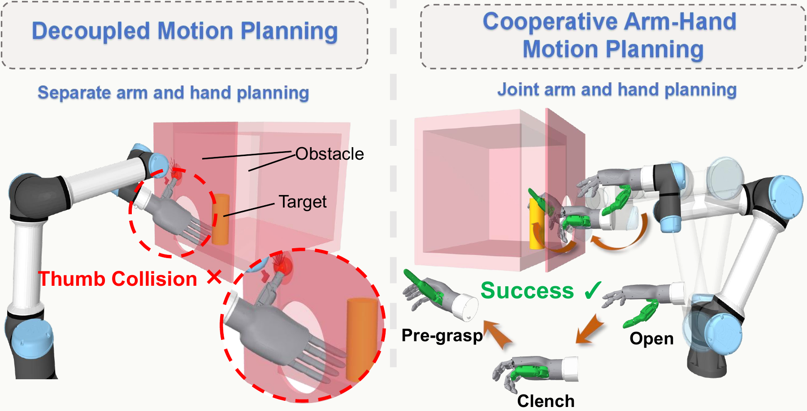
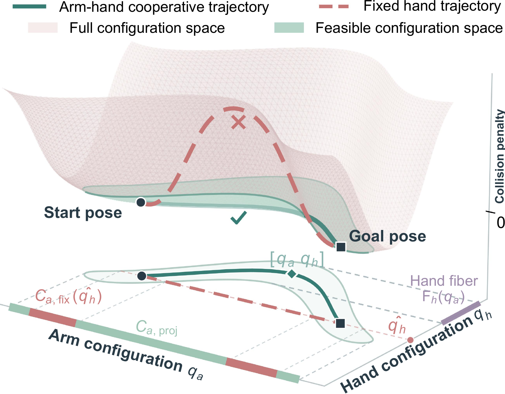
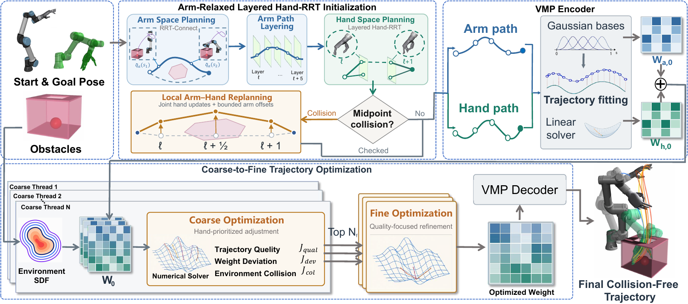

Generate diverse guides
Search the lower-dimensional arm space for multiple routes through the environment.
ARM–HAND COOPERATIVE PLANNING
Arm motion and hand shape adapt together
to navigate constrained spaces.

THE IDEA
Coordinated arm–hand motion planning is fundamental to dexterous robotic manipulation in constrained environments. Planning the arm and hand separately can miss feasible motions that require both to adapt along the path, while direct planning in the complete configuration space faces high dimensionality and nonconvex collision constraints.
CAMP characterizes this coupling through configuration-dependent feasible hand fibers. It constructs candidate trajectories using layered hand search with local arm relaxation, then represents them with endpoint-preserving via-point movement primitives for coarse-to-fine joint optimization. Across six constrained simulation tasks, CAMP achieves 84.2–98.5% planning success. Ablation studies examine the contribution of each component, and real-robot experiments demonstrate the approach on a UR7e arm with a LinkerHand.
SEE CAMP IN ACTION
From the planning dilemma to simulation and real-robot experiments.
FROM GLOBAL GUIDANCE TO JOINT REFINEMENT
Explore in the arm space. Adapt in the complete arm–hand space.
For a given arm configuration, the feasible hand fiber contains the hand configurations that keep the complete system free of environmental and self-collisions.
As the arm moves, this set can change in shape and connectivity. A cooperative trajectory must connect feasible hand configurations along the route—and may need to adjust the arm route to do so.


Search the lower-dimensional arm space for multiple routes through the environment.
Connect hand configurations along each guide. Relax the arm locally when transitions are blocked.
Fit endpoint-preserving VMPs and refine arm and hand trajectories through coarse and fine stages.
SIX CONSTRAINED ENVIRONMENTS
One planning framework, different demands on arm–hand coordination.
SIMULATION
Coordinate arm motion and finger articulation to traverse a wall-constrained environment.
Batch means; 10 × 100 trials.
Variability and protocol are reported below.
Simulation evaluates collision-free motion to prescribed goal configurations. The pregrasp tasks do not include grasping or lifting; Display Button Press evaluates target reaching without physical button actuation.
QUANTITATIVE EVALUATION
Success and solver time across the six simulation tasks.
| Task | Success rate (%) ↑ | Planning time (s) ↓ |
|---|---|---|
| Wall Traversal | 98.50 ± 1.33 | 3.40 ± 1.13 |
| Multi-Sphere Avoidance | 91.30 ± 1.51 | 4.70 ± 1.47 |
| Narrow Passage Traversal | 92.50 ± 2.11 | 30.10 ± 1.20 |
| Ball-in-Box Pregrasp | 92.00 ± 2.09 | 32.40 ± 1.20 |
| Display Button Press | 94.40 ± 2.49 | 35.60 ± 1.47 |
| Cabinet Cylinder Pregrasp | 84.20 ± 1.30 | 42.60 ± 2.08 |
All methods use the same sampled scenes and start and goal configurations. The experimental platform has a 6-DoF UR7e arm and a 16-DoF LinkerHand, for 22 active joints. Planning runs on an Intel Core i9-14900KF CPU and an NVIDIA GeForce RTX 5070 Ti GPU.
Success requires a complete trajectory that reaches the prescribed goal, satisfies the task constraints and passes exact collision checks in MuJoCo. Planning time is the solver wall-clock time averaged over all 100 trials in each batch; it excludes setup, path simplification, dense post-planning validation, collision-checker construction, artifact I/O and playback.
The paper provides the complete RRT-Connect, QRRT*, CHOMP and A*+CHOMP comparisons, as well as ablations of arm relaxation, trajectory representation and coarse-to-fine optimization.
Ball-in-Box Pregrasp · 100 planning trials per setting.
| Configuration | Success (%) ↑ | Time (s) ↓ | Normalized length ↓ |
|---|---|---|---|
| Without arm relaxation | 74 | 32.68 | 1.614 |
| Waypoint-wise joint representation | 79 | 84.97 | 2.260 |
| Fine-only optimization | 81 | 25.15 | 1.679 |
| CAMP (full method) | 92 | 32.45 | 1.598 |
Normalized length is cumulative joint-space motion divided by the direct start-to-goal displacement, averaged over successful trajectories. Arm relaxation affects initialization; both subsystems remain adjustable during trajectory optimization.
UR7e + LINKERHAND
Coordinated motion on a physical arm–hand system.
The hand reaches through a constrained opening toward the ball.
Success requires the fingertip to reach the target position. No physical button press is performed.
The hand passes the cabinet opening and approaches the cylinder.
The planner specifies the motion to the target configuration. Subsequent task actions shown in the real footage belong to the complete experimental system. The paper reports complete-system success over 10 trials per task.